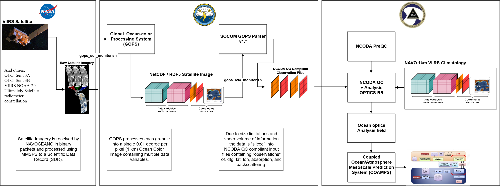

| Version | Description |
|---|---|
| v0.1 | Inception source code, totally alpha, v0.1 |
| v1.0 | v1.0 GOMEX run verified, basic NCODA QC compliance. |
| v1.1 | v1.1 Modularized, documented, verified to work. |
| v1.2 | v1.2 with CLI, Doyxgen documentation, and defensive programming initiated. |
| v1.3 | v1.3 NCODA QC output file and NASA 4km Climatology complete. |
| v1.4 | v1.4 Fortran record boundary completed. |
| v1.5 | v1.5 Data Slicing |
| v1.6 | v1.6 Climatology Orientation Change, climatology output correctly. |
| v1.7 | v1.7 NetCDF Libraries utilized for NetCDF ingest. |
| v1.8 | v1.8 Logger added, NetCDF/HDF5 Attribution Read, Fully Tested. |
| v1.8.1 | v1.8.1 Valid Data confirmed for NetCDF, working HDF now. |
| v1.9 | v1.9 Valid data only for NetCDF/HDF5 formats. Verified data and geographic output. |
| v1.10 | v1.10 Time slice applied. |
| v1.1.10 | v1.1.10 Compiler warning cleanup and C99 standards compliance upgrades in anticipation for code review. |
| v1.1.11 | v1.1.11 Additional code defenses. |
| v1.1.12 | v1.1.12 Documentation overhaul and full use of Markdown. |
| v1.1.13 | v1.1.13 File lock race condition defense applied (STIG requirement). |
| v1.1.14 | v1.1.14 Fixed DTG starting at 2400 to 2300 for NCODA QC/VAR support. |
| v1.1.15 | v1.1.15 Skipped |
| v1.1.16 | v1.1.16 Added min/max defaults per product and allowed CLI inputs for subject min/max. |
| v1.1.17 | v1.1.17 Added uid defenses to augment against RACE conditions. |
| v1.1.18 | v1.1.18 Updated filename and product name validation with cannonicalized input and whitelist characters. |
| v1.1.19 | v1.1.19 Added TAU 00 for all date/time outputs as per Dr. Travis Smith request due to how the model ingests inputs. |
| v1.1.20 | v1.1.20 Added -n for selecting a specific index of -s number of slices to process thus massive reducing the time it takes to process either a single strip or with batch processing cutting down processing time by 7 factors of a single run. |
| v1.1.21 | v1.1.21 Modified data-type constants for integration with NCODA suite of tools due to integration with NCODA team. |
| v1.1.22 | v1.1.22 Added comparison script for quick look if two versions output is consistent. |
| v1.1.23 | v1.1.23 Updated build path for libaries at NRL, updated DSRC build scripts to use Koehr as primary, and fixed decision statement problem associated with code defense that was causing persistent failure when evaluating output filenames. |
| v1.1.24 | v1.1.24 Stopped adding a day to end date of processing as the composite_time_end meta-data now encapsulates the ending date the composite represents. |
The purpose of this document is to provide a detailed description of the technical requirements, components, and development practices associated with software development for this project. This project's design will be laid out here in detail as a blueprint for project implementation. The following sections contain both detailed information about a software concept and the actions to be taken in order to create the system environment as well as details on all components used within the system.
The goal of this project is to direct near real-time satellite data regarding the optical properties of the surface ocean into operational ocean models and coupled ocean-atmosphere models. These satellite data are presently processed and distributed by the Naval Oceanographic Office (NAVO) for warfighter support, however, at present there is no mechanism that would direct these data into the operational ocean models. The present suite of operational models uses either a static table of optical attenuation coefficients that is based on Jerlov’s early work (before the modern satellite era [Jerlov 1968]), or a static monthly climatology built from an obsolete NASA mission (SeaWiFS). As these operational models do not utilize any contemporaneous ocean optical attenuation data, the default attenuation and radiative transfer computations may result in gross errors for simulated upper ocean temperature structure, mixed layer depth, and substantial underestimates of air-sea thermal energy exchange rates. These errors will occur in spite of temperature data assimilation efforts because incorrect attenuation functions create structural problems in the way the ocean models calculate radiant heating throughout the upper water column. In coupled modeling systems, these errors will also impact the thermal energy balance within the simulated ocean-atmosphere systems and may have cascading effects on the forecasts for a wide range of tactically pertinent environmental variables, such as Electro-Magnetic (EM) duct heights.
Develop occurs on NRL resources, RHEL platforms, and was run real-time on the tomcat.nrlssc.navy.mil system. Development on the DSRC was performed as well to act as a deployment validation as well as gain metrics on an alterate Batch system. Note that build and make files exist for RHEL platforms as well as the DSRC.
Specify network domain or named hardware configuration will be the target architecture for the smaller applications.
provide details specific for the development environment and execution environment for hardware that is specific to this project.
| Hardware Item | Configuration Identifier | Description |
|---|---|---|
| tomcat.nrlssc.navy.mil | N/A | See ACG for explicit details about asset specs. |
All communications are performed on a file system, it is possible and at NRL probable that subject file system is Network File System (NFS) mounted, however no other communciations via TCP/IP are performed on any ports. This is a scientific data processing program with no user accounts, roles, or web presence.
Language(s) / libraries that will be used for all applications developed for OFM-CS tasking.
| App Name | App Version | DADMS Id | End Date |
|---|---|---|---|
| GCC | 4.8.+ | ||
| Bash shell | 4+ | ||
| Korn shell | 93+ | ||
| H5 libs | 1.8.19 | ||
| NetCDF libs | 4.4.1 |
Software Domain
NetCDF, v4.4.1 is the predominant format used for the Global Ocean Processing System (GOPS) output imagery:
Fortran compliant binary outputs are the final resultant and are structured as follows:
Data Structure
| Type | Type | Type | Bytes | Bytes | Bytes |
|---|---|---|---|---|---|
| [int] | [int] | [int] | [4b] | [# records] | [4b] |
| [int] | [int] | [int] | [4b] | [data type] | [4b] |
| [int] | [char@12 x #rec] | [int] | [4b] | [dtg ary ] | [4b] |
| [int] | [float x #rec] | [int] | [4b] | [lat ary ] | [4b] |
| [int] | [float x #rec] | [int] | [4b] | [long ary ] | [4b] |
| [int] | [float x # rec] | [int] | [4b] | [a_490_lmi] | [4b] |
Binary Datafile Example
| Hex FRB | Hex Data Value | Hex FRB | Boundary | Data | Boundary |
|---|---|---|---|---|---|
| [00 00 00 04] | [00 67 5E E5] | [00 00 00 04] | [FORTRAN RB] | [6774501 ] | [FORTRAN RB ] |
| [00 00 00 04] | [00 00 00 DB] | [00 00 00 04] | [FORTRAN RB ] | [219 ] | [FORTRAN RB ] |
| [00 00 00 0C] | [32 30 31 38 31 32 31 37 30 30 30 30] | [00 00 00 0C] | [FORTRAN RB ] | [201812170000] | [FORTRAN RB ] |
| [01 9D 7B 94] | [42 30 99 9A] @ 6774501 | [27098004 ] | [44.18 ] | [FORTRAN RB ] | |
| [01 9D 7B 94] | [C3 34 00 00] @ 6774501 | [27098004 ] | [-180.0 ] | [FORTRAN RB ] | |
| [01 9D 7B 94] | [3D 55 66 C0] @ 6774501 | [27098004 ] | [0.05209994 ] | [FORTRAN RB ] |
FRB - Fortran Record Boundary
Internal data structures used are not saved to the file-system.
No database mechanism is in use for this application. NetCDF v4.+ in use for all data formats.
Data Exchange 
Data Flow (APSC-DV-002950)
Data exchange is not intrinsically network based, like a web application. This scientific application gathers data files via file system, stores them locally to facilitate easier I/O, and saves the final result to a designated folder. NetCDF and binary output structured for NCODA are the only data file formats and information exchanged.
No specific classification is associated with this project. Source code does not include a specific requirement to handle data classifications. VISOR code could be hosted on any environment that supports the same libraries as Global Ocean Processing System (GOPS). Additional output modification for security classifications would be handled via postProduction.sh scripts.
DoD 5200.01R identifies requirements for security classification and/or declassification guides.
Security classification guides shall provide the following information:
This is a scientific data processing software solution and does not have a traditional web architecture or utilize services. No API was developed for this software package. See ACG for details regarding the general Concept of Operations (CONOPS) and architecture.
Desktop applications will utilize HTTP with Secure Socket Layers (SSL) which leverages DoD PKI to perform certificate exchanges.
Communications Protocols
| Protocol | Port | Description |
|---|---|---|
| None | N/A | No network communications sans NFS mounts, environment dependent. |
Identify any roles associated with this application:
Roles
| Role Name | Function | Description |
|---|---|---|
| None | N/A | A standard system user account is the only requirement for this system. There are no administrator or special access privilege roles associated with this software package. |
Requirements are encapsulated within a 1498 and on file with the Office of Naval Research (ONR).
Changes to software are tracked in DI2E Jira under the NRL 7331 Project.
Overall project perspective is maintained at DI2E Confluence under the NRL 7331 Project.
See the section entitled 4.2.4 Software Configuration Management (APSC-DV-003010) for details regarding the proper way to start a change of this software application.
Changes are made in a branch that typically correlates to a registered Jira issue. Commits via the Software Configuration Management (SCM) system include reference to the Jira issue the change was initiated for.
Target environment is a server using Red Hat Enterprise Linux v7+ in either 32 or 64 bit configuration.
All aspects of Operating System security, maintenance, and installation are maintained by Jack Higgs (NRL) for the NRL Development Environment. System security will be managed by the end-user system administrators.
See section, Software, for details regarding the managed software domain associated with this IT solution.
The Software Development Lifecycle used for these applications will follow the identify process used for software development is the Spiral model whereby changes are made and a full test, validation, inspection loop is performed prior to adding new functionality. Each new fiscal year sees the modification of requirements and changes in direction if directed by the Office of Naval Research (ONR).
Many application team members may not be aware of the security implications regarding the code that they design, write and test. To address this concern, the Program Manager will ensure all levels of program management receive security training regarding the necessity, impact, and benefits of integrating secure development practices into the development lifecycle.
This training is in addition to DoD 8570 training requirements as DoD 8570 annual security training does not presently cover application SDLC security concerns.
The Program Manager will ensure development team members are provided training on secure design principles for the entire SDLC and newly discovered vulnerability types on, at least, an annual basis.
Development team members include:
Security Training completed by team in support of Secure Software Development Practices:
Security Training (APSC-DV-003400)
| Training Name | Date Reviewed | Description |
|---|---|---|
| OWASP Top Ten | 2020/01/01 | Internal training covering the OWASP Top Ten for 2017 and implications for this application. |
| SDLC 101 | 2020/01/01 | http://safecode.org/courses/security-development-lifecycle-101 |
| CyberAwareness | 2019/12/01 | DoD Requirement |
Development efforts will follow the processes specified in the Process Asset Library (PAL) or other standard as specified in a kick-off meeting. Enumerate the different processes and provide a hyperlink to their authoritative location.
DI2E Confluence stores all standards and best practices used per project and as a whole by the team.
Software Configuration Management (SCM) is the process of tracking code as it is developed, maintaining versions of code and their histories and ensuring that only one person at a time is making changes to a given section of code. The importance of SCM cannot be overstated, especially in a development environment with multiple programmers.
The application is modified using a Trunk/Branch/Tag methodology and the Git repository management system . Each modification will be tracked as a task which in turn will be the basis for software modification, testing, and eventual feature release. All modifications will be correlated to the host/parent organization tracking/requirements system which authorizes the work.
Objects considered eligible for deployment:
VISOR utilizes a single repository.
Additional information regarding operational deployment is located in the section Transferring Code from Development to Deployment (APSC-DV-003010).
All modifications to any configurable part of the project will be managed and tracked by using the tracking system.
Each time this software is released a new version is indicated and a tag created, all change requests are recorded in the version history for that release. The team will have an environment that will represent the release of all software deployments. All software components, source code, libraries, and project documentation will be encapsulated within repository name with URI under specific structure requirements highlighted in the top level of the repository.
Individual tag history is stored with each project in a corresponding README.md file at the top level of the folder.
For a baseline of all components of the software package refer to the Deployment folder for the last deployment which should contain: + Test Case report. + Sonar Source report. + Unit, Human Testing, Technical Acceptance Test | User Acceptance Test report. + Security scan report (Sonar duplicates this function). + A copy of the actual software and any supplementary content to deploy as in the binary release. + Reference to the reference for repository for subject release of the following components: + Source Code. + Documentation. + Architecture diagram, embedded within documentation. + Design document (this document). + User Release Notes + Application Configuration Guide + Setup Guide + Installation Guide
Common programming standards are adhered to for the following reasons:
See: http://www.cse.buffalo.edu/~rapaport/code.documentation.Excerpts.pdf for details and a more robust explanation as to why a coding standard is necessary.
Coding standards are outlined on DI2E Confluence NRL 7331 HOWTO under: Profiling Applications, Code Review, Transition Environment, Git Best Practices and Sample Log Helper Scriptlets, Development Knowledge, Format and Linting tools.
Note that each project has a build and test script associated with it.
Coding format / standards:
| Specification | Sub-Component | Purpose |
|---|---|---|
| Doxygen | VISOR (visor_gops_parser) | Documentation |
| Markdown README.md | All | Documentation |
| SonarQube | VISOR (visor_gops_parser) | Compliance inspection and security |
| Visual Code Grep Scanner | VISOR (visor_gops_parser) | C/C++ static code analysis |
| Shellcheck | Consolidated System | Compliance/Standards inspection |
Unsafe methods are those that have side-effects that are not understood properly or require elevated security privileges in order to perform their function. No unsafe methods are utilized in this system. Functions such as strlen and related string manipulation functions are not used. Research into best C practices for unsafe functions was conducted and all relevent function calls replaced with known good representations of the same function.
Classic list of recognized unsafe functions:
A grep performed on all *.c source files indicates the aforementioned unsafe functions are not in useexcept in these locations:
Other considerations are the output by Flaw Finder: 1. Multiple references to format strings (CWE-134). This is a library pulled in from a 3rd party and reviewed. Inputs provided to the log.c code are all generated by the developer. In the event an external string is provided to the log.c routines subject external input would be scrubbed for input by 2. References to CWE-362/CWE-367. As previously stated this code should be run using the lowest privileges that are required to accomplish the necessary tasks. If possible, create isolated accounts with limited privileges that are only used for a single task. That way, a successful attack will not immediately give the attacker access to the rest of the software or its environment. Also note that files are closed after use, user input is validated, see validate_ routines, subject files are not open and closed multiple times, and race conditions are met with the fcntl library that locks the .out files created during program executio. NetCDF’s don’t have a locking mechanism for shared reading thus the input is unaltered.
Buffer boundary checking referenced in the report for libll.c are invalid as this routine is a debugging routine to support output of data to ASCII format. Use of snsprintf helps prevent overflow. Commentary regarding log.c buffers do not take the sizeof(buf) into account and are a false positive.
memcpy concerns in visor_gops_parser are mitigated by specifically checking incoming strings for size, calculating maximum size and then allocating bytes.
[Unsafe C functions and the replacement](https://stackoverflow.com/questions/26558197/unsafe-c-functions-and-the-replacement]
No system commands are called in compiled code.
As this is not a web application, no URL's are stored within source code.
Error messages (Exceptions) will be invoked with a custom class (API infrastructure) specifically designed to support the Application Development STIG to ensure no information expressed during error (stack traces) are displayed to the end-user thus revealing information that could be deemed valuable to an attacker. Output of error should go to the log, based on log levels, and an obfuscated/reduced output should be displayed to the end user.
The application must not be subject to error handling vulnerabilities (APSC-DV-003235). The software specific error/exception class will extend from the base functionality of the existing language error/exception class/object.
This application was designed to test the “contract” by which it was written and to fail fast if that contract is broken without authorizing additional capabilities due to failure.
A domain of standard responses, which are application specific, will be matured over time based on encounters of the running package.
The following are employed as part of “standard practice” within the VISOR system.
Always abstract one level between API’s and invocation. Constants are used as extensively as possible and when used more than once or there is a potential for modification subject values are placed in a configuration file.
All source, for the entire project, will be formatted prior to a tag being created using, preferred, an external formatting tool thus ensuring no dependency on a specific IDE. See standards section for details on tools used for source code formatting. Use of uncrustify was utilized.
Source code will be scanned for classic errors using a standardized tool (could be considered standard if a custom written solution is the only way to verify error for a language). + No issues flagged as Critical will be permitted to go forward into a release unless agreed to by team. + Update tool configuration file so error doesn’t propagate. + SonarQube is used to help manage static code analysis, see Test Case documentation for details regarding SonarQube instance that supports this project. + Visual Code Grepper (windows based) is used to help manage static code analysis as well, see Test Case documentation for details regarding SonarQube instance that supports this project.
Validate input Validate input from all untrusted data sources. Proper input validation can eliminate the vast majority of software vulnerabilities. Be suspicious of most external data sources, including command line arguments, network interfaces, environmental variables, and user controlled (APSC-DV-002530, APSC-DV-002560). Performed on all user input received, see validate_ routines.
Heed compiler warnings. Compile code using the highest warning level available for your compiler and eliminate warnings by modifying the code. Use static and dynamic analysis tools to detect and eliminate additional security flaws. Compiler warnings are kept to a bare minimal. Compiler details and log results are made available in the Test Case
Architect and design for security policies. Create software architecture and design your software to implement and enforce security policies. For example, if your system requires different privileges at different times, consider dividing the system into distinct intercommunicating subsystems, each with an appropriate privilege set. SELinux concerns would have to be addressed for those applications associated with this effort.
Keep it simple. Keep the design as simple and small as possible. Complex designs increase the likelihood that errors will be made in their implementation, configuration, and use. Additionally, the effort required to achieve an appropriate level of assurance increases dramatically as security mechanisms become more complex.
Default deny. Base access decisions on permission rather than exclusion. This means that, by default, access is denied and the protection scheme identifies conditions under which access is permitted.
Adhere to the principle of least privilege. Every process should execute with the least set of privileges necessary to complete the job. Any elevated permission should be held for a minimum time. This approach reduces the opportunities an attacker has to execute arbitrary code with elevated privileges. This system was designed to support only a basic user account with appropriate access to file system areas designated in teh configuration file.
Sanitize data sent to other systems. Sanitize all data passed to complex subsystems such as command shells, relational databases, and commercial off-the-shelf components. Attackers may be able to invoke unused functionality in these components through the use of SQL, command, or other injection attacks. This is not necessarily an input validation problem because the complex subsystem being invoked does not understand the context in which the call is made. Because the calling process understands the context, it is responsible for sanitizing the data before invoking the subsystem. All user supplied input is validated for erroneous characters.
Practice defense in depth. Manage risk with multiple defensive strategies, so that if one layer of defense turns out to be inadequate, another layer of defense can prevent a security flaw from becoming an exploitable vulnerability and/or limit the consequences of a successful exploit. For example, combining secure programming techniques with secure runtime environments should reduce the likelihood that vulnerabilities remaining in the code at deployment time can be exploited in the operational environment.
Use effective quality assurance techniques. Good quality assurance techniques can be effective in identifying and eliminating vulnerabilities. Fuzz testing, penetration testing, and source code audits should all be incorporated as part of an effective quality assurance program. Independent security reviews can lead to more secure systems. External reviewers bring an independent perspective; for example, in identifying and correcting invalid assumptions. Source code is internally code reviewed, discussion of algorithms is held with team members, and SonarQube is used for compliance checks.
Adopt a secure coding standard. Develop and/or apply a secure coding standard for your target development language and platform.
As referenced in section, Build Environment, multiple environments are used to develop this application. Build and Test (BAT) is the actual developer’s workstation. Code is written after the trunk is branched and the appropriate change request is updated. The developer implements the algorithm/modifications to their branch on their workstation and conducts tests prior to reintegration of the branch into the trunk.
The Operational environment will be hosted on NAVOCEANO resources and maintenance of both environment and security fall to that organization's administrative staff.
The final steps in any deployment are to specifically test both general functionality as well as specific functionality of what was released with the specific stakeholder for each change request.
Deployment will have a guide and be a specific tag identified as part of the transition document.
TODO: Consider Ansible deployment script.
Application files must be cryptographically hashed prior to deploying to DoD operational networks (ASPC-DV-003140). Indicate where deployment materials are kept as part of a deployment, if using a code repository be sure to include the URI.
The focus of this section is to discuss security within a DoD environment for web application as well as Desktop application development. Security in this context are those measures taken to protect an application from aberrant/malicious actions by any user accessing the application. Security is the use of various mechanisms, with defense in depth taken into consideration, intended to thwart and/or record the aforementioned aberrant/malicious user behavior.
This document represents core knowledge of the project in question regarding application security which will serve as the authoritative medium for all decisions. Standards, rules, and guidance on action will come from the material contained in this document.
The goal of application security is to prevent unauthorized access to the application and its respective data. It should be noted that there is no completely secure application; however attack vectors can be secured such that the efforts to overcome security implementations far outweigh any gains that could be had.
The SANS Institute has an excellent and sufficiently generic checklist regarding application security. This checklist notes important points to consider during the design process: risk assessment, authentication, and authorization/access control. Security issues within the actual codebase fall outside the scope of this document.
The Department of Defense (DoD) is sufficiently concerned about this topic to dedicate a complete Security Technical Implementation Guide (STIG) to the subject. Information Assurance Officers (IAO) and even end users should also be concerned with web application security because of its direct effect on data integrity.
Major categories within application security discussed in this text are:
From the STIG:
DoD Directive 8500.01E requires that “all IA and IA-enabled IT products incorporated into DoD information systems shall be configured in accordance with DoD-approved security configuration guidelines” and tasks DISA to “develop and provide security configuration guidance for IA and IA-enabled IT products in coordination with Director, NSA”. By using the STIG, developers achieve a twofold accomplishment: compliance with DoD mandates, and usage of fully vetted best practices. The STIG addresses three levels (or categories) of vulnerabilities – CAT I (highest, can lead to immediate unauthorized access), CAT II (high potential of granting unauthorized access), and CAT III (can indirectly cause unauthorized access).
Subject application is not an IA or IA-enabled IT product. It is a scientific processing suite which should be run with an unprivileged account.
All authentication for this application is resident with the host operating system (OS) and has no bearing on the execution of this project.
Access to the repository and project materials is governed by DI2E' user management policy with is DoD approved.
None
OWASP advocates the following security principles:
This is note a web application, not applicable.
From the website: “International in scope and free for public use, CWE(TM) provides an unified, measurable set of software weaknesses that is enabling more effective discussion, description, selection, and use of software security tools and services that can find these weaknesses in source code and operational systems as well as better understanding and management of software weaknesses related to architecture and design.” The Common Weakness Enumeration website can certainly be consulted periodically concerning vulnerabilities and weaknesses or as issues arise, otherwise this website should not be considered a must-visit by developers.
It should be noted that valuable information related to application security can be obtained from this site. While not mandatory, as DoD STIG requirements represent the highest standard, this site is worth periodic review for potential vulnerabilities when executing a threat assessment.
From the website: “Founded in 1901, NIST is a non-regulatory federal agency within the U.S. Department of Commerce. NIST’s mission is to promote U.S. innovation and industrial competitiveness by advancing measurement science, standards, and technology in ways that enhance economic security and improve our quality of life.”
It should be noted that valuable information related to application security can be obtained from this site. While not mandatory, as DoD STIG requirements represent the highest standard, this site is worth periodic review for potential vulnerabilities when executing a threat assessment.
The STIG details Threat Modeling:
“Threat Modeling is the process of identifying potential threats to the application, risk ranking these threats, and selecting appropriate countermeasures or mitigations for the threats. Threat modeling is a critical step in securing an application from attack.”
The threat risk modeling process has five steps enumerated below. They are:
The remainder of this section identifies different threat assessment models and how they might be used to assist in an assessment.
DREAD is a classification scheme for quantifying, comparing and prioritizing the amount of risk presented by each evaluated threat. The DREAD acronym is formed from the first letter of each category below. DREAD modeling influences the thinking behind setting the risk rating, and is also used directly to sort the risks. The
DREAD algorithm, shown below, is used to compute a risk value, which is an average of all five categories.
Risk_DREAD = (DAMAGE + REPRODUCIBILITY + EXPLOITABILITY + AFFECTED USERS + DISCOVERABILITY) / 5
The calculation always produces a number between 0 and 10; the higher the number, the more serious the risk. Here are some examples of how to quantify the DREAD categories:
Damage Potential - If a threat exploit occurs, how much damage will be caused?
Reproducibility - How easy is it to reproduce the threat exploit?
Exploitability - What is needed to exploit this threat?
Affected Users - How many users will be affected?
Discoverability - How easy is it to discover this threat?
Note: When performing a security review of an existing application, “Discoverability” will often be set to 10 by convention, as it is assumed the threat issues will be discovered.
Data provided can potentially be altered prior to receipt, however no data is used when making system calls and input validation of all user data is performed prior to execution. Data could be modified during run-stream operations if the attacker had access to the file system and files being generated.
Worst harm is invalid / erroneous results from the processing code resulting in products that do not convey the presented product information.
System breach not possible.
Application designers should be aware that their applications may be subject to a denial of service attack. Therefore, the use of expensive resources such as large files, complex calculations, heavy-duty searches, or long queries should be reserved for authenticated and authorized users, and not available to anonymous users.
Denial of Service could be engineered if code was used to process the same NetCDF over and over again which is why this should be run on an unprivileged account.
Unless run as root, which there are defenses in place for this, no elevation of privilege is possible.
SonarQube will be used as a static code analyzer; no automated test tools have been identified save direct user manipulation for the application.
An application configuration guide defines the components, configuration of the components, and how those components work together. See Appendix B: Application Configuration Guide (ACG) ~ APSC-DV-003285. Installation guides are located in a separate text. See ACG for additional details.
Software metric is a measure of some property of a piece of software or its specifications. Since quantitative measurements are essential in all sciences, there is a continuous effort by computer science practitioners and theoreticians to bring similar approaches to software development. The goal is obtaining objective, reproducible and quantifiable measurements, which may have numerous valuable applications in schedule and budget planning, cost estimation, quality assurance testing, software debugging, software performance optimization, and optimal personnel task assignments.
The scope of the Metrics Topic will cover the future development effort such as lines of code and tracking elements (time). Metrics, for both process and software, tell us to what extent a desired characteristic is present in our processes or our software systems. Maintainability is a desired characteristic of a software component and is referenced in all the main software quality models (including the ISO 9126). Measures will be taken at each software release after the initial deployment.
All measures / metrics can be gathered from DI2E whether they be issues, errors, or lines of code (SonarQube).
Software testing is an investigation conducted to provide stakeholders with information about the quality of the product or service under test. Software testing also provides an objective, independent view of the software to allow the business to appreciate and understand the risks of software implementation. Test techniques include, but are not limited to, the process of executing a program or application with the intent of finding software bugs (errors). Software testing can also be stated as the process of validating and verifying that a software program/application/product: + Meets the business and technical requirements that guided its design and development; + Works as expected; and + Can be implemented with the same characteristics.
Software testing, depending on the testing method employed, can be implemented at any time in the development process. However, most of the test effort occurs after the requirements have been defined and the coding process has been completed. As such, the methodology of the test is governed by the software development methodology adopted.
Different software development models will focus the test effort at different points in the development process. Newer development models, such as Agile, often employ test driven development and place an increased portion of the testing in the hands of the developer, before it reaches a formal team of testers. In a more traditional model, most of the test execution occurs after the requirements have been defined and the coding process has been completed.
A primary purpose of testing is to detect software failures so that defects may be discovered and corrected. All testing for release will have a Test Plan prior to release to the customer. User Acceptance Test (UAT) will be conducted prior to operational release of the software.
Functional testing refers to activities that verify a specific action or function of the code. These are usually found in the code requirements documentation, although some development methodologies work from use cases or user stories. Functional tests tend to answer the question of “can the user do this” or “does this particular feature work”.
Non-functional testing refers to aspects of the software that may not be related to a specific function or user action, such as scalability or security. Non-functional testing tends to answer such questions as “how many people can log in at once”. Most applications developed will be desktop applications and many traditional non-functional tests such as multi-user access, band-width utilization will not be applicable. Specific tests will be documented in Use Test Cases. Only those tests the customer requests of a non-functional nature will actually have registered tests in Use Test Cases.
All defects and failures encountered will be registered with the sponsor and designated as a bug. All defects will be addressed and prioritized based on communication with the sponsor. Typically software changes will be exercised first followed by defects during a development cycle unless the defect is born from a newly created software change. Describe the process and how you manage defects.
All software developed will target the Java Virtual Machine (JVM) and who will make a final compilations and tests against the sponsor's target infrastructure thus ensuring full compatibility with final environment.
Software testing is used in association with verification and validation:
Tests are frequently grouped by where they are added in the software development process, or by the level of specificity of the test. The main levels during the development process as defined by the SWEBOK guide are unit-, integration-, and system testing that are distinguished by the test target without implying a specific process model. Other test levels are classified by the testing objective.
Unit testing refers to tests that verify the functionality of a specific section of code, usually at the function level. In an object-oriented environment, this is usually at the class level, and the minimal unit tests include the constructors and destructors. It will not be necessary to unit test every function in the application, primary focus will be object (which contain data or perform operations on data) method unit tests. 100% code coverage is not a reality in most applications thus focus on unit testing will be at a discrete versus a raw code coverage value as performed by SonarQube.
No discrete unit testing is present as this is not an API but an application that uses many different components.
Integration testing is any type of software testing that seeks to verify the interfaces between components against a software design. Software components may be integrated in an iterative way or all together (“big bang”). Normally the former is considered a better practice since it allows interface issues to be localized more quickly and fixed. Integration testing works to expose defects in the interfaces and interaction between integrated components (modules). Progressively larger groups of tested software components corresponding to elements of the architectural design are integrated and tested until the software works as a system.
Integration tests are available per platform (DSRC, NRL) and are proceeded by test_*.
System testing tests a completely integrated system to verify that it meets its requirements. The completed compiled application will be tested in the development environment and ultimately tested on DOD and named hardware platform workstations. Describe how system testing is performed and indicate by reference where standards for testing exist.
System test on CENTOS and DSRC SGI & Cray platforms was performed.
An application vulnerability assessment is a test conducted in order to identify weaknesses and security vulnerabilities that may exist within an application. The testing must cover all aspects and components of the application architecture. If an application consists of a web server and a database, then both components must be tested for vulnerabilities to the fullest extent possible.
Vulnerability assessment tests normally utilize a combination of specialized software called application vulnerability scanners as well as custom scripts and manual tests. In some instances, multiple tools are required in order to test all aspects of application features, functions and architecture. The vulnerability scanner is typically configured to communicate with the application through the user interface or via an applications communication port. In addition to using automated tools, manual tests conducted from the OS console such as executing custom scripts or reviewing configuration settings for known vulnerabilities may also be included as part of the test.
Testers will typically utilize application user test accounts in order to test application features and functionality such as adding content, executing queries and completing transactions. The vulnerability testing software utilizes user actions and access as well as a list of known security vulnerabilities in order to detect and identify weak security controls or misconfigurations that could potentially be manipulated by the user or create a security vulnerability.
Testing must be conducted on a periodic basis while the application is in production and subsequent to system changes to ensure any changes made to the system do not introduce new security vulnerabilities.
Describe how vulnerability testing is conducted for the application.
No discrete tools are used for vulnerability testing except local attempts to penetrate the CLI arguments which are performed informally.
The application testing process is vital in identifying security flaws before the application is released. In addition to the standard functional testing performed, the development team will have at least one tester specifically testing the application for security flaws. Standard security flaws will be evaluated on the development environment, review of source code for security flaws will be reviewed as well. Test plans specify how you will test the application. Test plans say how you will test. Use Cases represent a function that the application is performing and is the basis for requirements/code creation. Test Cases are the embodiment of the Use Case and provide details descriptions of how the test of the Use Case will be conducted. Test Cases persist, have a specific date/time of execution, and individual performing the test. Integration tests could include any number and types of tests, they represent a body of tests that confirm past testing, which was successful, continues to be successful due to any change to the application or its components. An integration test passing represents acknowledgement of a known past functional state. Automated testing is nothing more than tests, at any level of granularity, which can be invoked, typically triggered by an event like a build, and run by themselves with no human interaction. The resultant of an automated test should be persisted.
For each deployment a single developer will be designated as the Test Manager and responsible for the review of all tests performed and will consult with the Team Leader regarding the results of the tests performed. The team will ensure tests procedures exist and at least annually executed to ensure system initialization, shutdown, and aborts are configured to ensure the system remains in a secure state (APSC-DV-003160).
Designated Testers
| Name of Tester | Email Address | Last Test related training |
|---|---|---|
| Todd Lovitt | todd.lovitt.ctr.@nrlssc.navy.mil | Not conducted. |
The testing procedure will function as follow: + Integration Testing + Integration testing will be written for each sub-component with a validation of results executed. + Validation will contain expected size. + Validation will contain expected number of outputs. + Validation will contain verification of data such as AVG of a parameter. + System Testing + System testing will occur by the developer prior to commit based on integration testing. + Technical Acceptance Test + Will be conducted with a demonstration to the end-user. + User Acceptance Test + Will occur minimally at customer's resource.
++ Glossary of Terms
Access Control - based on your system classification, you will be given access to particular package functions specific to your job.
Attribute - information about a process or task.
Checklist - a list of items, each with a check box, displayed in the task window.
Class - a category, to which documents and process definitions are assigned, used to organize documents and process definitions.
Graphical User Interface (GUI) - visually oriented interface to talk with a program.
Host - generally a program that stores data for a client and provides that data to the client as requested.
Primary Key - a value that uniquely identifies each row in a database table. See Relational Database management on the Internet.
Privilege - an access control mechanism for processes.
C - a compiled language.
RDBMS - Relational Database Management System
RDBMS ER Diagram - (Relational Database Management System Entity Relationship Diagram).
Security Technical Information Guide (STIG) - The documentation that specifies and explains the procedures for performing the SRR.
SCM - Software Configuration Management.
{kind=link}